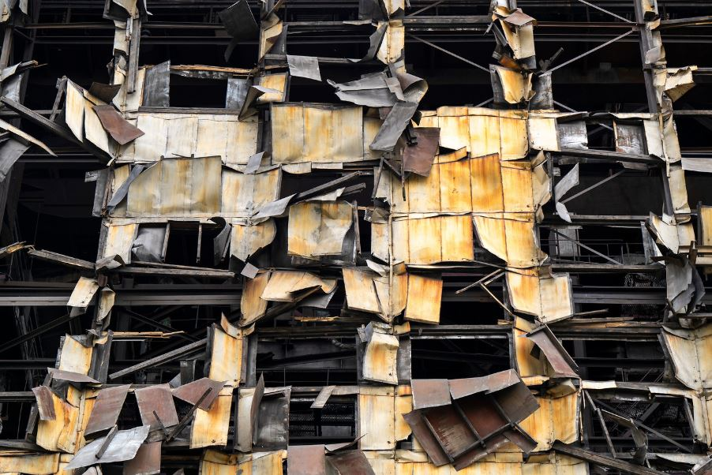
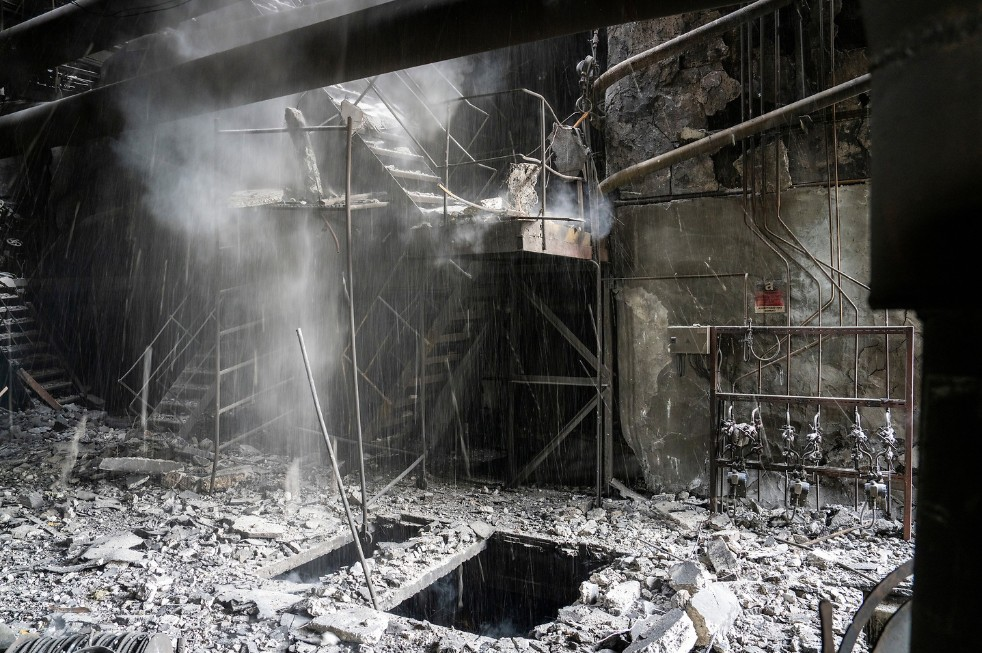

Ucrania
|  | Restos |
| Esta imagen es de una central electrica de carbon en Ucrania que ha sido destruida por 9 misiles rusos | |
| Etiquetas: #2024 #Guerra #Ucrania |
|
Daños en las alturas | |
| Durante la invasion rusa, este edificio situado en el centro de negocios de Kiev, fue dañado por las fuerzas rusas | ||
| Etiquetas: #2024 #Guerra #Ucrania | ||
 |
Un intimidante recordatorio | |
| Fotografía de una bomba rusa que no llego a explotar en medio de un campo ucraniano, este misil no será movido por el miedo a su repentina detonación, sirviendo como un recordatorio intimidante del conflicto en curso | ||
| Etiquetas: #2022 #Guerra #Ucrania | ||
|  | Caida de cenizas | |
| Imagen del edificio de la central electrica de carbón desde dentro, se puede ver como las cenizas, polvo y restos del edificio caen desde el techo | ||
| Etiquetas: #2022 #Guerra #Ucrania | ||
 |
Lo ultimo que vio... | |
| Imagen del interior de un camion civil, que fue acribillado por las fuerzas rusas, tiene la vista en el asiento del conductor para ver seguramente lo ultimo que vio antes de morir por una guerra injusta y en la que no participaba de ninguna manera, un simple civil seguramente asesinado por error o por mera casualidad | ||
| Etiquetas: #2022 #Guerra #Ucrania | ||